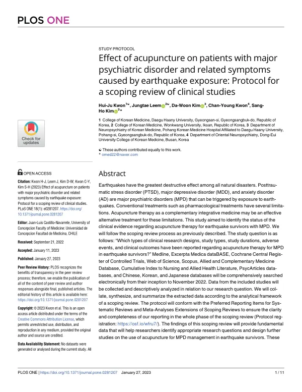

Effect of acupuncture on patients with major psychiatric disorder and related symptoms caused by earthquake exposure: Protocol for a scoping review of clinical studies
Kwon HJ, Leem J, Kim DW, Kwon CY, Kim SH
PLOS ONE 18(1):e0281207

첫 장 · 오픈액세스First page · open access
논문 소개Summary
지진은 자연재해 가운데 파괴력이 가장 큽니다. 무너진 건물과 사람을 겪은 생존자에게는 외상후스트레스장애, 주요우울장애, 불안장애 같은 정신질환이 뒤따를 수 있습니다. 약물치료가 표준이지만 이상반응과 낮은 순응도 같은 제한이 있어 보완통합의학이 대안으로 검토돼 왔습니다. 침도 그중 하나인데, 지진 생존자를 대상으로 한 침 연구가 지금까지 얼마나 어떤 형태로 이루어졌는지 정리된 적이 없었습니다.
이 논문은 그 현황을 살피기 위한 주제범위 문헌고찰의 연구계획서입니다. 연구 질문은 하나로 좁혔습니다. 지진 생존자의 정신질환에 대한 침 치료 연구가 어떤 설계로, 어떤 기간에, 어떤 결과 지표와 이상반응을 보고했는가. Medline, EMBASE, Cochrane Central, Web of Science, Scopus, AMED, CINAHL, PsycArticles와 중국어·한국어·일본어 데이터베이스를 처음부터 2022년 11월까지 검색하기로 했습니다. 보고는 주제범위 문헌고찰용 PRISMA 확장판을 따릅니다.
계획서이므로 결과는 없습니다. 이 계획으로 수행한 고찰은 같은 해에 나왔고 이 목록의 INT-66입니다. 연구계획은 Open Science Framework에 등록했습니다.
Earthquakes are the most destructive of natural disasters. Survivors who live through collapsed buildings and lost lives may develop major psychiatric disorders such as post-traumatic stress disorder, major depressive disorder and anxiety disorder. Pharmacological treatment is standard but limited by adverse effects and poor adherence, so complementary and integrative approaches have been considered. Acupuncture is one of them, yet no one had charted how much research on it existed for earthquake survivors, or in what form.
This paper is the protocol for the scoping review that would chart it. The research question was kept narrow: what study designs, durations, outcomes and adverse events have been reported for acupuncture in earthquake survivors with major psychiatric disorders. Medline, EMBASE, Cochrane Central, Web of Science, Scopus, AMED, CINAHL and PsycArticles, together with Chinese, Korean and Japanese databases, were to be searched from inception to November 2022. Reporting follows the PRISMA extension for scoping reviews.
Being a protocol, it reports no findings. The review carried out under this plan appeared the same year and is INT-66 in this list. The protocol was registered with the Open Science Framework.
인용Cite
Kwon HJ, Leem J, Kim DW, Kwon CY, Kim SH. Effect of acupuncture on patients with major psychiatric disorder and related symptoms caused by earthquake exposure: Protocol for a scoping review of clinical studies. PLOS ONE. 2023;18(1):e0281207. doi:10.1371/journal.pone.0281207